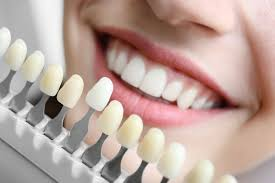
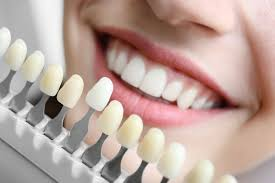

Blanqueamiento dental | |
|
|
 Blanqueamiento dental

Consiste en eliminar del esmalte
Blanqueamiento dental

Consiste en eliminar del esmaltepor medio de sustancias químicas, todo aquello que altere su color original. Los procedimientos más idóneos para cada paciente deben elegirse en función del diagnóstico, que se realiza tras un examen dental y una historia clínica adecuada. regresar |